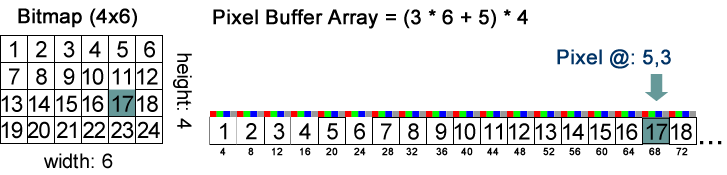

If we have to position many shapes, we can translate from the prior shape.
To rotate the HTML5 Canvas, we can use the rotate() method. The rotate transformation is defined by an angle in radians.
A radian is the ratio between the length of an arc and it's radius. To use degrees, multiply by Π/180.
Scale is pretty straightforward: context.scale(scaleX,scaleY);
Each time you call translate, rotate, or scale it adds on to the previous transformation. This gets really hard to track after awhile.
The context object represents the current drawing state. The state includes the current transform, the fill and stroke color, the current font, and a few other variables. Canvas lets you save this state by pushing it onto a "stack". After you save the state you can make modifications, then restore to the previous state. Canvas takes care of the book-keeping for you.
Notice how the disance between rectangles does not expand, but rather stays linear.
With canvas, we can get right at the pixels directly and manipulate them. We can create our own image data, or play with existing photo data.
Thinks of pixel buffers as essentially a huge array of all the pixels in an image. The pixels are made up of red, green, blue, and alpha components, in that order, so to calculate the index of the red component of a particular pixel you would have to calculate the following equation:
(y * width + x) * 4
For the pixel 5,3 on a bitmap that is 6 pixels wide it would be:
(3 * 6 + 5) * 4
The * 4 is because each pixel has four color components (RGB and the opacity or 'alpha' component). The data object contains the width of the image, so you can write it as (3 * data.width + 5) * 4. Once you have found the red component you can find the others by incrementing the index for the green, blue, and alpha components. (code on next slide)
 joshy.orgIn the following example, we're looping through all the pixels in the image and inverting them.
var img = new Image();
$(img).load(function(){
var c = $('#pixel-buffers-ex canvas').get(0).getContext('2d');
c.drawImage(img,0,0); //draw initial image
var data = c.getImageData(0,0,img.width,img.height); //get the canvas data
//invert each pixel by looping through array and subtracting from 255
for(n=0; n<data.width*data.height; n++){
var index = n*4; //jumps to next point in array after 4 colors
data.data[index] = 255-data.data[index]; //red
data.data[index+1] = 255-data.data[index+1]; //green
data.data[index+2] = 255-data.data[index+2]; //blue
// alpha (skipping)
}
c.putImageData(data,500,0); //set the recolored data back
});
img.src = "images/fire.jpg";
We have to define our own event inside of canvas. isPointInPath does the heavy lifting for us. Use the console of your browser to see the javascript output.
var c = $('#events canvas').get(0).getContext('2d');
c.beginPath();
c.arc(
100, 100, 40, //40 pix radius circle at 100,100
0, Math.PI*2 //0 to 360 degrees for a full circle
);
c.closePath();
c.stroke();
var a = c.isPointInPath(110,110);
console.log('Is point 110,110 in the circle? ' + a);// returns true
var b = c.isPointInPath(200,100);
console.log('Is point 200,11 in the circle? ' + b); // returns false
To animate on a canvas, think about it like drawing something over and over again. When you call a draw function, it is immediately put on the screen. Basically, after drawing something, wait a few milliseconds and then draw something else. We "ask" the browser to call us back after those few milliseconds and then draw another thing. Javascript gives us setInterval to make these repeated calls.
var c3 = $('#animation-1 canvas').get(0).getContext('2d');
c3.fillStyle = "red";
var x = 0;
function drawIt() {
c3.fillRect(x,50,200,100);
x+=5;
// stop the timer once it's beyond the canvas
if(x > c3.canvas.width){
clearInterval(intervalID);
}
}
var intervalID = setInterval(drawIt, 100);
Why was the previous example a solid bar instead of an animated box? Actually, our rectangle did go across the screen, updating by five pixels every 100 millesconds (or 10FPS), but the old rectangle is still there. It looks like the rectangle is just getting longer and longer.
Remember that the canvas is just a pixel buffer. If you set some pixels they will stay there until you change them. So lets clear the canvas on each frame before we draw the rectangle with clearRect().
var c4 = $('#animation-2 canvas').get(0).getContext('2d');
c4.fillStyle = "red";
var x2 = 0;
function drawIt2() {
c4.fillRect(x,50,200,100);
//nuke it from orbit, it's the only way to be sure
c4.clearRect(0,0,c4.canvas.width,c4.canvas.height);
x2+=5;
// stop the timer once it's beyond the canvas
if(x2 > c4.canvas.width){
clearInterval(intervalID);
}
}
var intervalID2 = setInterval(drawIt2, 100);
Most 8-bit and 16-bit video game consoles relied soley on sprites for animation. Sprites are small images that draw quickly on the screen with little overhead. Sprites are usually "cut" out of a larger image called a sprite sheet.
Think about it like a flip book: The sprite contains all the different images and we just flip through each one. See the example below.
Let's draw just the third image from left.
var img2 = new Image();
$(img2).load(function(){
var c5 = $('#animation-3 canvas').get(0).getContext('2d');
c5.drawImage(
img2, // the image of the sprite sheet
96,0,48,48, // source coords inside sheet (x,y,w,h)
0,0,48,48 // destination coordinates on canvas (x,y,w,h)
);
});
img2.src = "images/explode.png";
Think about it like a flip book: The sprite contains all the different images and we just flip through each one.
Let's flip through it. We'll do this by keeping track of the current frame using a tick counter.
var tick = 0; //every time we redraw, we'll increment this
var c6 = $('#animation-4 canvas').get(0).getContext('2d');
var img3 = new Image();
$(img3).load(function(){
function drawIt3() {
var frame = tick % 7; //7 is the number of frames in the sprite sheet
var x3 = frame * 48; //48 is the width of each frame
c6.clearRect(0,0,c6.canvas.width,c6.canvas.height);
c6.drawImage(
img3, // the image of the sprite sheet
x3,0,48,48, // source coords inside sheet (x,y,w,h)
0,0,48,48 // destination coordinates on canvas (x,y,w,h)
);
tick++;
}
var intervalID3 = setInterval(drawIt3, 100);
});
img3.src = "images/explode.png";
Click here for an advanced HTML5 hands on lab.
Each class member will complete this assignment and turn in the html files via links online using the class website. DO NOT EMAIL ME HTML FILES. Get your file online and use the homework submission system to turn in the LINK to your file.
(Bonus canvas game lab, using jQuery:http://www.html5rocks.com/en/tutorials/canvas/notearsgame/)
A film company with a movie about to be shown in festivals needs a site built for their firm as well as for the movie itself. They are looking for comps for 5-6 individual pages per site. They are paying $1,000 for just the design, no code involved.
Please email me with a link to your design portfolio if you are interested. This is a great way to show of some real work and the pay isn't bad.
There are many canvas animation resources out there. Below are a few you might find helpful.
Press "m" to see all slides. /
#